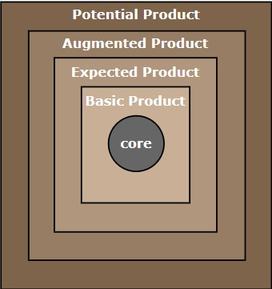

Week 4
talk about marketing strategy through 4 Ps—product, price, and place, promotion
very important concept in marketing known as marketing mix or popularly called as '4Ps'
Objective
Define the term 'product'
Describe the various levels of product and different product classifications
Demonstrate the product mix concepts
Explain branding and branding decisions
A marketing strategy refers to a business's overall game plan for reaching prospective consumers and turning them into customers of their products or services
Marketing strategy is about achieving your marketing objectives through proper analysis of the marketing mix namely
Product
Price
Place
Promotion
proper combination of these four elements (4Ps) is the key to the success of any marketing process.
Product is a major carrier of consumer value
To achieve market leadership, firms must offer products of superior quality that provide unsurpassed customer value
Product

A product is anything that can be offered to the market to satisfy a need or want.
A product can be visualized in multiple levels. The levels are: Core level, Basic Product, Expected Product, Augmented Product and Potential Product.
Products are generally classified into four types. They are: convenience goods, shopping goods, specialty goods and unsought goods
A product mix is also called product assortment, which is the set of all products and items a particular seller offers for sale.
A product mix for any organization has got 4 properties: Length, Breadth, Depth and Consistency.
Brands is defined as a name, term, sign, symbol, design or combination of them, intended to identify the goods and services of one seller or group of sellers and differentiate them from competitors.
Brand related decisions include: brand sponsor decision, brand name decision and brand strategy decision.
A product can be visualized in multiple levels. And each of these level contribute
synergistically to create the product. The levels are core, basic, expected, augmented, and
potential. I'll talk about this a little more. See, the first one is the core product level. As the
name suggests, it is the core. This explains the reason for which the consumer is making the
purchase. This level explains the reason "why". The "why" of buying the product or the core
benefit of buying the product. Let's take the example of a hotel. In hotel, when a customer is
checking in, essentially he is buying rest and sleep, that is, the core reason. However, this
core is expressed through the basic product. The basic product is one through which the
core benefit is delivered to the customer. So, continuing with the same example of a hotel, a
hotel room includes a bed, a bathroom, towel, desk, etc. So, these are the basic benefits, the
basic products through which the core benefit is extrapolated. The core benefit is delivered.
The next level is the expected product. So, the expected product is the set of attributes that
the consumers normally expect when they buy the product. So, when a customer books a
hotel room, you'll be expecting a fresh towel, clean pillows, clean bed, new soap, a working
TV, a fan, AC, whatever. Now, you must have guessed it by now that it is expected is a
function of what others are doing. Expected product depends upon the market. That is what
the other hotels are providing. If all other hotels are providing HDTV with cable channels,
then that is expected. If they are not providing, then it is not be expected, it will be
augmented.
So, that leads to the fourth level of product, which is augmented product. The one in which
the attributes that exceeds customer expectation, which leads to happiness or in marketing
terms it is called customer delight. So, if I take the same example of hotel room, the
customers find that hotel room provides free dinner, complimentary breakfast, probably a
fruit basket, probably a mini bar inside, probably a set of DVD players. So, these are the kind
of things that make people happy. So, this is augmented. See, again I am repeating, this
expected and augmented, they depend upon what the market is offering.
The last level of the product is the potential product. A potential product covers all possible
augmentations and all possible transformations that a product may go through in future,
which leads to customer delight. So, a library of DVD collections, complimentary spa
treatment, range of exotic gourmet food, wines—all these let your imagination go wild—all
these things will have when you travel next, probably.
Product Classification(തരംതിരിക്കല്)
Next, we'll talk about product classification, that is, to understand the products better. There are
various classifications. The products are classified into four types—convenience, shopping, specialty,
and unsought. Incidentally, this classification was proposed by Melvyn T. Copeland in a Harvard
Business Review article way back in 1923, and it was based on consumer buying habits. The
convenience goods are these goods which are frequently purchased by the consumer. These are often
purchased with minimum efforts. For example, soft drinks, soap, salt, newspaper. These are the kind
of things which are typically without any significant decision making process or thought process, you
go and buy. You identify the need and you go and purchase.
These are further classified into staples, impulse, and emergency goods. Staple goods are the goods
which are something consumer purchases regularly, for example, toothpaste or soap. Impulse goods
are those goods which are purchased without prior planning. You have gone to buy your monthly
purchases and then suddenly you see an ice-cream cone and then you want to eat it, suddenly, you
see some chocolate and you pick it up. So, those kind of things are impulse. And then, we are looking
at emergency goods. As the name suggests, emergency goods are purchased on urgent need. Again,
you didn't plan for it, you didn't think for it, but the moment the need arrives, you started to purchase.
Consumer is forced to buy such product due to emergency situations, that is, if you've burnt your
hand, you would like to buy an antiseptic cream like Burnol. Itstartsraining, you will need an umbrella.
So, these are the kind of things you are looking at as emergency product. So, these are all part of
convenience goods
The next category is shopping. The name suggests consumer shops around, the consumer compares.
Shopping goods are goods that consumer purchases by undergoing comparative process of selection
and the purchase of such basis are price, suitability, style, quality, for example, electrical appliances,
furnitures, clothing, you know, shopping. You compare across brands. What it means is there is
significant difference between the brands. Now you can difference between the convenience goods
and the shopping goods. In case of convenience goods, consumers does not compare, just buy based
on their convenience, which means there is no significant difference between the brands. Whereas,
in case of shopping goods, consumers shop around. They compare across brands, which means there
is significant difference across those brands. So, the convenience good could be more of a commodity
product, whereas, the shopping good is more of branded products. Please remember, this has got
nothing to do with whether the difference is there in reality or not. It's totally based on what
consumers believe, the consumer perception.
The third category is specialty goods. These are the goods with unique characteristics or unique brand
appeal that is not replaceable, for which the buyer is willing to make a special effort,special purchasing
effort to buy. It could be like high priced like any luxury cars or it could be something like low priced
like a Heinz Ketchup. But, if the consumer perceive that this product or this brand is unique and
inimitable and they are willing to wait for a specific period of time for the product or brand to come
or say travel a long distance or pay high price.
And the last one is unsought goods. As the name suggests, people don't look forward to buy in this
product. They know the existence of this product but they are normally not thinking of buying. For
example, fire extinguishers, fire alarms, any life insurance products. These are the kind of things you
know are helpful but you typically don't think of buying this product. So, you have to be literally a
personal selling or advertising has to be done, it has to be pushed for the consumers to purchase it.
Product Mix
In the earlier videos, we have spoken about product levels and product classification. Now, I'll
introduce you to one of the important concepts called product mix. A product mix is also called
product assortment. It is the set of all the products, all the items that a particular seller, which is a
manufacturer or a marketer who offers for sale. For example, if your firm consists of three different
product lines called lamps, table lamps, tables, and chairs—then all these three put together forms
the product mix. In short, product mix consists of the different product lines. So, a product mix for any
organization has got four properties. It has got a length. Length of a product line or a product mix,
breadth of a product mix, depth of a product item and, in turn, the product line, and consistency of
the product mix. These are the things that I am going to elaborate to you.
'
Managing the product mix successfully is one of the biggest challenges for most marketing
organizations and one of the prerequisites for the same is understanding as well as appreciating each
of the four concepts that I just spoke, that is, you are talking about the different types of properties
of product mix, that is, length, breadth, depth, and consistency. I'll elaborate that.
Product line is a group of products that are closely related (they satisfy the similar type of needs, sold to same customer group and marketed through similar channels)
eg, 3 different product lines - soaps (bar soaps and liquid soaps), shampoos (anti-dandruff, hair fall control and hair growth), toothpastes (gel, regular, herbal, and toothpaste for kids)
The length of a product line refers to the total number of items that are there in a product line.
length of a product mix refers to the sum of all the items which are there in the different product line in the product mix
Product line
So, what is a product line? Let's see. Product line is a group of products that are closely related. Why?
Because they satisfy the similar type of needs. They are sold to the same customer group and they are
marketed through similar distribution channels. When I say similar means similar kind of retail
formats. This is a table, have a look at the table. This is an example where we can see different product
lines. There are three different product lines that we can see here, one consists of soap. Soaps are bar
soaps and liquid soaps. And the second product line are shampoos, which consist of anti-dandruff
shampoo, hair fall control shampoo and hair growth shampoo. And then, the toothpastes which are
gel, regular, herbal, and the toothpaste for kids. So, clearly we can see three different product lines
and all the products in one product line are closely related with each other. So, now I talk about the
length of a product line. The length of a product line refers to the total number of items that are there in
a product line. And, length of a product mix refers to the sum of all the items which are there in the
different product line in the product mix. For example, the length of product mix here in the table that I
just now discussed with you is 9. Why? Two soaps, three shampoos, and four toothpastes
The next item I do want to talk to you about is breadth. So, what is the breadth of the product mix?
The breadth or width of a product mix refers to how many different type of product lines that the
company carries. For example, the breadth or width of the product mix that is there in the table are
three. Three different product lines are there—soaps, shampoos, and toothpastes. Now, we are getting
into little complicated zone, that is, depth - depth of a product item or a depth of a product line. The
depth of a product item refers to how many variants are offered for any individual product item. And
depth of a product line is the average depth of all the products in the product line.
The final concept that I want to talk to you about regarding the properties of a product mix is
consistency. Consistency of a product mix refers to how closely related the various product lines are.
See, when the products are closely related with each other, they form part of a product line. But now
how closely the different product lines are related with each other. So, they could be related because
same end use or the same production requirements or the same distribution channel. So, these are the
different kind of parameters by which the product line could be closely related.
So, I'll give you the concept of depth practically with the example that we are taking forward. So, I'll
take the soap product line. So, there is a bar soap and there is a liquid soap. So, the bar soap, let's say,
there are three different varieties—100 gram, 200 gram, and 300 gram. Liquid soap, again, three
different varieties—50 ml, 150 ml, and 300 ml. Now, the bar soap, each one of them again has got
three different flavors—rose, lavender, and sandalwood. The liquid soap that we just now spoke
about, each of the varieties, that is, 50, 150, and 300, again, they have got four different flavors—lime,
herb, coconut husk, and sandalwood.
Now, when you are talking about the depth of it, the depth of bar is 3 into 3 is 9. The depth of liquid
soap is 3 into 4, which is 12. So, if I am talking about the depth of the soap product line, the average
depth of soap product line, it is 9 plus 12 divide by 2, that is, 10.5. So, 10.5 is the average depth for
the product line called soap. Now, similarly, in that product mix, we have shampoo product line. Let's
say the average depth is 12. We have got toothpaste product line, let's say the average depth is 8. So,
the depth of total product mix is 10.5 plus 12 plus 8 divided by 3, which is 10.16. Even though the
depth of a product mix doesn't make much sense but they are just for academic purpose. But the
depth of an item and the depth of a line is very significant to know that whether you are spreading
yourself too thin or you are adequately covering all your categories.
In the previous videos, I have already explained the basics of product line analysis.
However, now putting it in context, there are two distinct steps. Understand each product
lines market profile and performance. And this would involve spreading the total product mix
on the table in terms of its length, breadth, depth, and consistency. And then, pull out the
sales and profitability figures from the various channels, analyze them as minutely as
possible, which items are doing well and which are not.
And the reason for the performance analysis as described in the previous step lies with the
competition. So, the product manager must review how his product line or his product item is
positioned against the competitors' lines. And this kind of performance leads to some decision
making by the product manager. The decision typically would be quite intuitive. Drop some
items that are not doing well, put some resources to the items that are performing better, and
in addition, if there are gaps in the market that no item is catering to, introduce new items.
These are the typical kind of issues and challenges that the product management would be
looking up to.
The obvious question for all of you is why do we need all this? How doesit help? The answer is obvious.
Eventually, we want to develop a product mix that satisfies the needs and wants of our target
consumer. When we elaborate the length, breadth, and depth, we do realize what exactly are we
offering and to whom. Are there some items which are offered to no one? Are there, conversely, are
there some consumer segments for which we have no offer? Then, eventually we start looking at and
developing product lines. So, this will help us to ascertain our complete set of offering vis- à-vis our
competitor. And this is the crux of product management. And consistency helps us to optimally
allocate our resources
Introduction to Brand
Till now we have learnt about product. We learnt the meaning of product, the various levels of product, the different classification of product and also the concept of ‘product mix’.
We will now turn towards one of the most important aspect of marketing – i.e., ‘brand’. We often hear this term these days. That is because of the attention it demands from both consumers and marketers.
'Brand' is one of the most valuable intangible assets of a firm. It has become extremely important for marketers to properly manage the 'brand'. Building a strong brand is both an art and a science.
It requires careful planning, accurate execution and a long-term commitment.
Many established brands such as Mercedes, Sony, and Apple have commanded a price premium because of the approval and in turn importance given to these brands by the consumers. Even services demands
such attention. For example, service brands like McDonald’s, FedEx, Marriot hotel, Mahindra Holidays, Google, etc. have succeeded as some of the most preferred brands by customers.
So, what does ‘brand’ actually mean? Let us see
Brand Decisions- Introduction
Now, we'll talk about various decisions involving brands. The first and most important decision
whether to brand or not. Now hold on. Just now I told brand is something which is irreplaceable. Once
you created the brand, you don't need to worry about anything else. And now I am telling the decision
is whether to brand or not to brand. What is happening? Yeah, we agree brand isthe most sustainable
differentiator, it is difficult to create and even more challenging to maintain. It involves time,
resources, and capability on the part of the manufacturer and the marketer to eventually create the
brand. So, it's not really like medicine, I want to have a brand. Every marketer, every manufacturer,
they would like to have a brand. But do all of them have? No.
On the other hand, if a product is a follower, you are new into the market, you are not a challenger,
you are not a big player, then without investing considerable resources, it may be better not to invest
in branding. So, you could be one of the "me too" kind of a product and you follow the leader. When
a company decides to brand its product or service, it must choose which brand name to use. There
are certain brand name related decisions. We'll look into some of them now.
The first one is, who will be the owner of the brand—the brand sponsor decision. It could be a
manufacturer brand like Bajaj, Honda, Sony—these are all manufacturer brands. The company could
also sell to a reseller or a retailer who will give the product a different brand name, a private brand.
This is also called distributor brand. For example, the brand of Shopper Stop. So, this is a distributor
brand. And finally, the company can choose a license brand. Something like a Levi or a Parker. So,
these are the kind of things those are part of some licenses.
line extension, existing brand names extended to the same product category but with some variety, like new sizes, new flavors in the existing product category. Coca-Cola, different bottle sizes
brand extension, existing brand name is extended to a new product category like Kellogg's healthy breakfast cereals brand into a different line of cereals plus line of biscuits or snacks or nutrition
multi branding, new brand names are introduced in the same product category. Procter and Gamble, Unilever introducing new toothpastes, detergent powders
new brands category, new brand name for new product category. Procter and Gamble or Unilever, introducing a completely different category ie electrical appliances
co-branding, Dell computers with Intel Inside, Intel processors